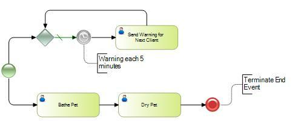

Cause the immediate cessation of the Process instance at its current level and for any Sub-Process, but it will not terminate a higher-level parent Process.
When the Terminate event is reached, it causes the current thread and all other active threads to end immediately, regardless of their respective states.
The following example shows how this event is often used. There are two parallel paths. The upper is effectively an infinite loop, and when the lower reaches the Terminate event, the work of the upper path will be stopped, thereby stopping the infinite loop too.

Objects: Business Process Diagram
| Backlinks | ||
| BPD End Events | Error End Event in BPD | Toc:GeneXus BPM Suite |
| None End Event in BPD | Signal End Event in BPD |